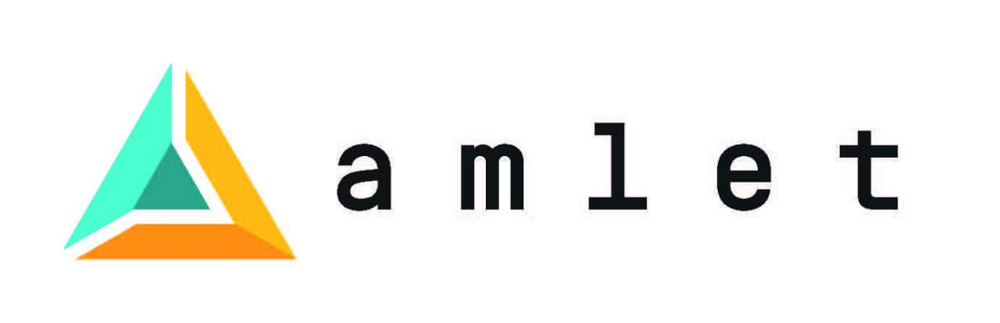

We address the G2C challenge, proposing a decentralized solution for the implementation of the so-called “Digital green certificate” proposed by the European Commission, or of any other similar initiative conceived to reduce the spreading of the Covid-19. Following the Digital green certificate, we are able to transform in verifiable credentials these information about the holder:
Amlet Care consists of two parts working in close connection:
The Amlet Care solution enables the commercial-grade implementation of SafeTogether Shielding use case developed by our team and presented at CovidCreds.org initiative. Our system supports the management of a “buffer” with immune persons, according to the proposal of Prof. Udi Shapiro from the Weizmann Institute. Amelt Care supports staff for high-risk categories, it enables to verify directly the truthfulness and validity of the certificate, avoiding the risk of fraud.
Amlet web interface is devoted to collect and verify personal information. The citizen authenticates herself using Dizme identity data, then Amlet web interface uses dynamic forms to ask the citizen which information about her health status she wants to transform in verifiable credentials. It then asks for some paper documentation to be uploaded, usually a vaccination certificate or the result of a swab, in a pdf form. The certificates are checked in order to avoid frauds (and verifying they concern the right person), then OCR software extracts all the needed information. This information is therefore translated into verifiable credentials and sent to the Dizme app. Every time the citizen needs to prove her health status, she will just scan a qrcode, to open an encrypted, p2p channel, with the verifier (being it a policeman, a hostess, a restaurateur, depending on the country's policy). The transmission of the verifiable credentials will take just a few seconds, making health checks almost instantaneous and allowing safe travels or safe events’ attending.
Andrea Danielli, CEO and founder, 10 yrs experience as AML analyst at the Italian Banking Authority (Banca d'Italia) with on-site and off-site inspection practice
Enrico Fagnoni, CTO and founder, an experienced entrepreneur, and the founder of LinkedData.Center; he is an expert of semantic web technologies and AI.
Leonardo Longhi, full stack developer, graduated from the Politecnico of Milano. He has been working with LinkedData.Center and Enrico for over three years with whom he has formed a solid professional relationship. He specializes in algorithms and APIs. He helps Enrico in modelling A.I. solutions.
Mohd Ehtesham Miah, full stack developer, graduated from the Politecnico di Milano. He has been working with LinkedData.Center and Enrico for over three years with whom he has formed a solid professional relationship. He specializes in data visualization architectures and technologies with particular reference to Linked Data, 3D and augmented reality. He helps Enrico in complex system architecture design.
Yassine Ouahidi, full stack developer, graduated from the Politecnico di Milano. He has been working with LinkedData.Center and Enrico for over three years with whom he has formed a solid professional relationship. He is specialized in the management of linked data and open data. He is the LinkedData.Center contact point in the IBM Hyper Protect Accelerator for Cloud Issues.
Updates and feedbacks: Andrea Danielli